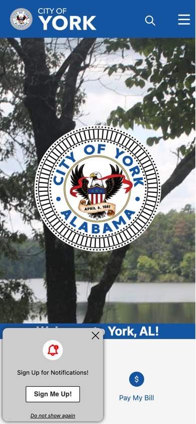
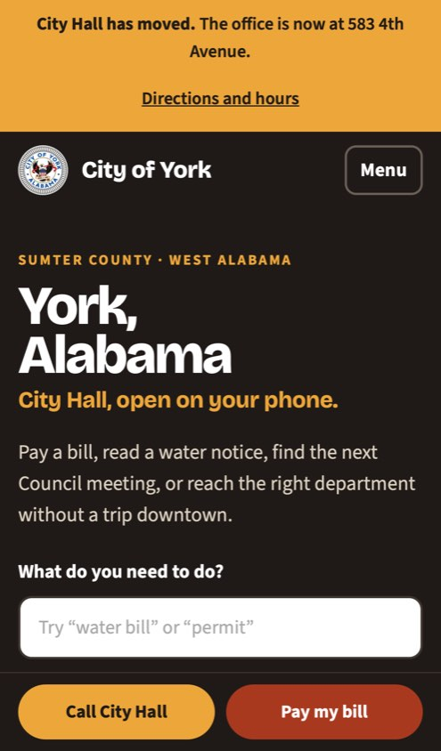

Side by side
Today's site and the concept
Every item in the "Today" column was checked on the City's website on October 7, 2026.


| What a resident needs | Today | In the concept |
|---|---|---|
| City Hall's address | The bottom of every page says 607 2nd Avenue. The City's November 2025 notice says the office moved to 583 4th Avenue. | 583 4th Avenue in a banner, the contact section and the footer, with a directions button. Staff change it in one place. |
| A boil water notice | Posted as a picture of the letter, with no text behind it. A screen reader, a search engine or a translator can't read it. | The same notice as real text, with what to do at the top and a "lifted" status when it ends. |
| Council agendas and minutes | Agendas: "No resources are available at this time." Minutes: four meetings, all from May to July 2022. | The next four meeting dates worked out automatically, with a slot for each agenda and set of minutes. |
| News | The News page reads "No news posts are available at this time." Posts appear under Mayor's Corner instead. | One list of notices and news on the home page, newest first. |
| Reaching a department | The Utility Department page lists no staff. Parks & Recreation and Community Development are blank pages. | A "Who to call" list: every department, a name and a number you can tap. |
| Home page on a phone | The seal and a photo fill the first screen. The first link sits under a pop-up. | A search box that understands "water bill", then the eight most-used services. |
| Page size on a phone | About 4.7 MB to load the home page. | About 0.2 MB. It opens quickly on a weak signal or a prepaid data plan. |
| Lead Hazard Reduction program | The three links to the program page and its two forms lead to error pages. | Three questions tell a family whether their home may qualify, then who to ask for the form. |
| Ordinances, minutes and the permit form | Nine of the eleven posted documents are scans, with no text a phone can read aloud or search. | Documents as real text, or as a web page, so they can be searched and read aloud. |
| York's history | The History link leaves the City's site for a third-party marker database. | York's own story, on York's site. |
| Finding York on Google | The home page has an empty description for search engines. | A title, a description and structured contact details with the correct address. |
The concept keeps the City's NexBillPay payment portal, its permit and zoning documents and the Service2Sumter forms exactly where they are. Nothing about how City Hall takes payments would change.
What matters most
Four things a city website has to get right
These matter more than how a site looks.
Accessibility
The Department of Justice now requires city websites to meet WCAG 2.1 AA. For cities York's size the date is April 26, 2028. Notices posted as pictures are the hardest part to bring up to that standard, so the concept starts there.
Phones first
Most residents will open the site on a phone, many on mobile data. Every screen of the concept was designed at phone width first.
Speed
A light page loads on a slow rural connection. The concept is about one twentieth the size of the current home page.
Staff can update it
Notices, meeting dates, staff names and documents are changed by City Hall in a simple editor. An address or phone number is typed once and updates everywhere.
Benefits for the City
Fewer calls, fewer wasted trips
- Nobody drives to the old building.The new address is the first thing on the page and the one Google shows.
- Fewer "is the water safe?" calls.One banner staff switch on for a boil notice and switch off when it's lifted.
- Fewer "when is the meeting?" calls.Council and court dates are calculated from the schedule, so they are never out of date.
- Problems reach the right desk.A report form sorted by type: leak, streetlight, street damage, overgrown lot.
- More families reach the lead program.A grant is only as good as its sign-ups. The checker gets a parent to the form in under a minute.
Helping York grow
The first thing an employer or a funder sees
A site selector, a grant reviewer or a family thinking about moving home will look at the City's website before they call anyone.
Business attraction
Exit 8 on I-20/59, the Norfolk Southern line, the Industrial Board and the zoning map together, with a person to call.
Grants and funders
York is rebuilding its water and sewer systems with state and federal money. A current site with posted agendas and minutes supports every application the City writes.
Visitors and community pride
The Coleman Center for the Arts, Lake Louise, the Historic Caboose and Hometown Christmas, with York's story from Old Anvil to today.
Resident services
The everyday tasks stay first, so the site works for the people who already live here.
No obligation
This concept was created independently
Williams Digital made it for the City of York to look at. No obligation or commitment is required, and the City is welcome to share it with the Council.
Who made this
Dylan Williams is an Alabama-based developer, Auburn University Computer Science Engineering graduate, and technology professional with more than 10 years of experience supporting large-scale productions, digital platforms, and user experiences.
Happy to walk the City through it
A 15-minute call or a visit to City Hall, whichever is easier.